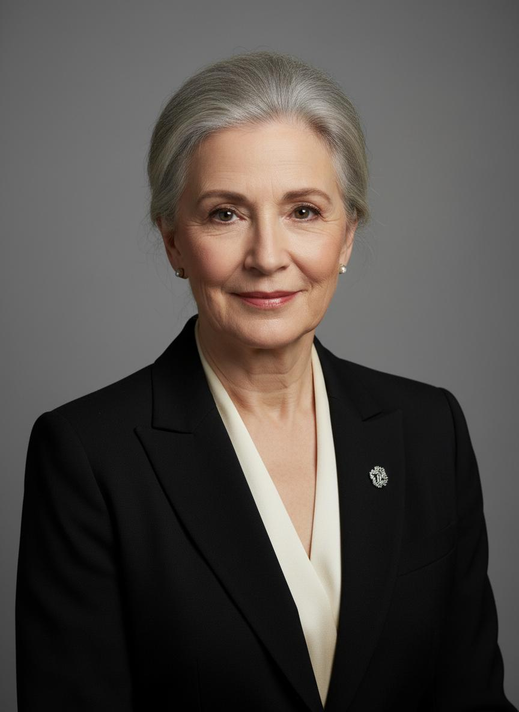
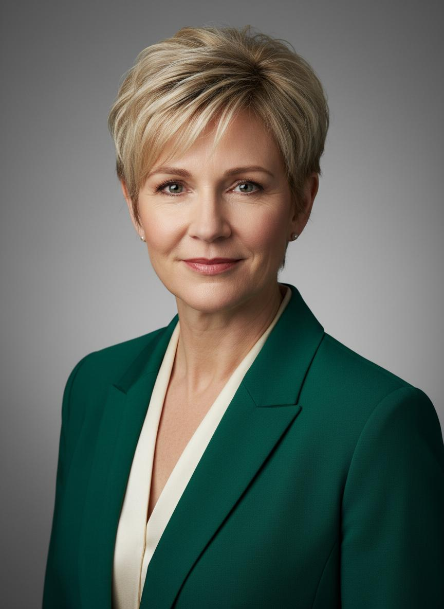
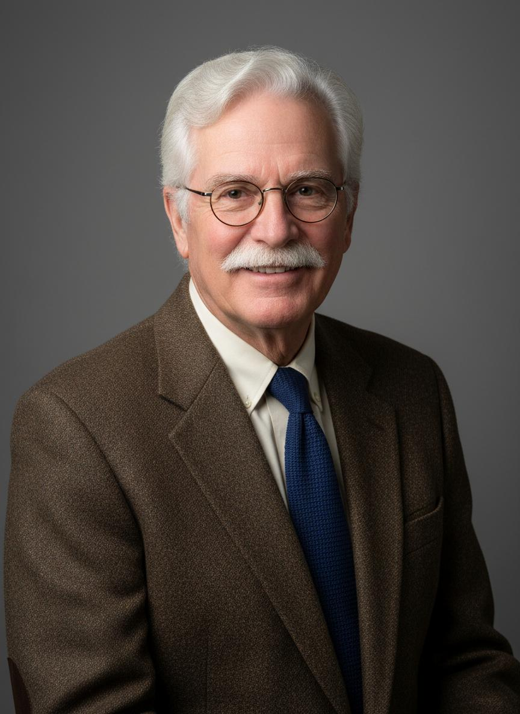
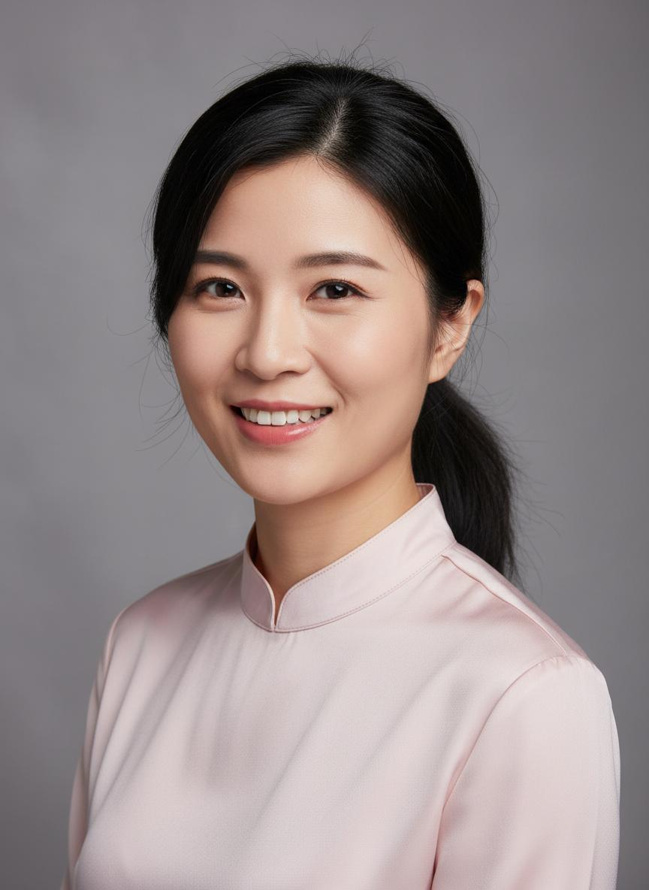
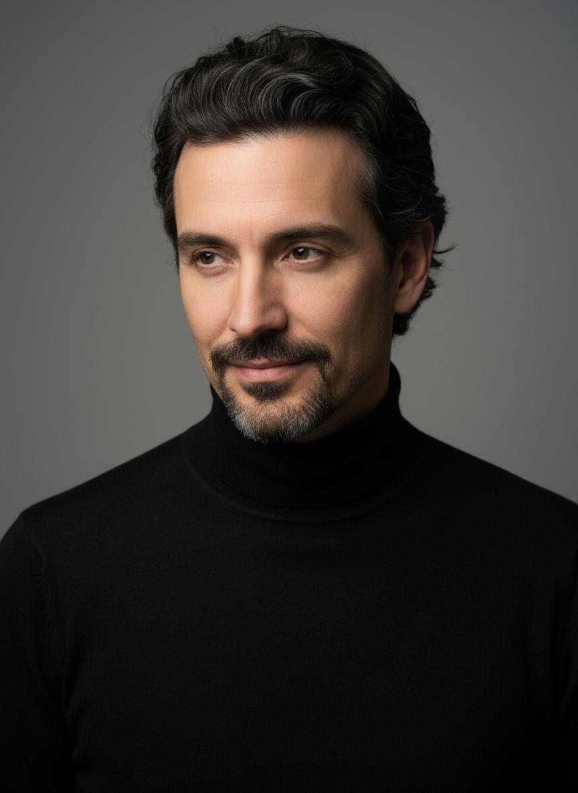
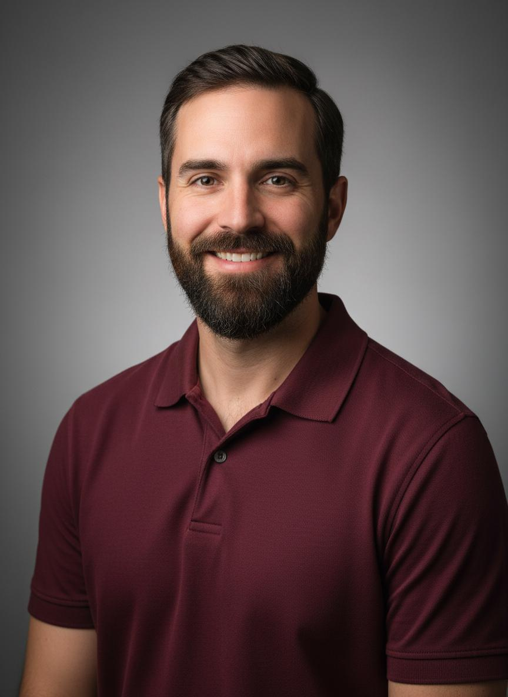

Искусни стручњаци кои ја градат иднината
Запознајте ги нашите посветени професори
Директор на училиштето
Машинско инженерство
Доктор по машинско инженерство со долгогодишно искуство во образованието и индустријата. Автор на повеќе научни трудови и учебници.
Заменик-директор
Електротехника
Магистер по електротехника со специјализација во електроенергетика. Посветена на модернизацијата на наставата и воведување нови технологии.
Раководител на струка
Машинска струка
Магистер по машинско инженерство со богато искуство во индустријата. Експерт за CNC технологии и компјутерско проектирање.

Раководител на струка
Електротехничка струка
Магистер по електротехника со специјализација во електроника и програмирање. Водечки експерт за образовни иновации.
Раководител на струка
Сообраќајна струка
Магистер по сообраќајно инженерство со искуство во железничкиот сообраќај. Специјалист за безбедност во сообраќајот.
Раководител на струка
Угостителска струка
Магистер по туризам и угостителство со меѓународно искуство. Претходно работела каке шеф-готвач во водечки ресторани.
Професор
Механика и отпорност
Доктор по машинско инженерство со долгогодишно искуство во предавање механика и отпорност на материјали. Автор на учебници.

Професор
Техничко цртање и CAD
Магистер по машинско инженерство со специјализација во компјутерско проектирање. Експерт за AutoCAD, SolidWorks и Inventor.
Професор
Термодинамика и термотехника
Доктор по термотехника со искуство во индустријата и образованието. Специјалист за греење, вентилација и климатизација.
Професор
Електрични инсталации
Магистер по електротехника со специјализација во нисконапонски инсталации. Лиценциран проектант за електрични инсталации.

Професор
Електроника и микропроцесори
Магистер по електроника со искуство во развој на електронски уреди. Специјалист за микроконтролери и вградени системи.

Професор
Програмирање и бази на податоци
Магистер по информатика со искуство во софтверско инженерство. Експерт за C++, Java, Python и развој на веб-апликации.

Професор
Компјутерски мрежи
Магистер по информатика со специјализација во компјутерски мрежи. Сертифициран Cisco и Microsoft инструктор.
Професор
Сообраќајни прописи и безбедност
Магистер по сообраќајно инженерство со искуство во сообраќајната полиција. Специјалист за сообраќајна безбедност.
Професор
Конструкција на возила
Магистер по машинско инженерство со искуство во автомобилската индустрија. Специјалист за мотори со внатрешно согорување.
Професор
Технологија на готвење
Магистер по туризам и угостителство со искуство како шеф-готвач. Специјалист за македонска и меѓународна кујна.
Професор
Сервирање и угостителска психологија
Магистер по туризам со искуство во хотелскиот менаџмент. Специјалист за угостителски услуги и комуникација со гости.
Професор
Пекарство и слаткарство
Дипломиран инженер по прехранбена технологија со специјализација во пекарство. Учествувала во меѓународни натпревари.

Професор
Инструктор за возење
Лиценциран инструктор за возење со искуство во обука на професионални возачи. Специјалист за безбедна возачка техника.
Професор
Странски јазици
Магистер по англиски јазик и книжевност со специјализација во стручен англиски. Преведувач за техничка документација.
Отворете ги вратите кон успешна кариера со квалитетно стручно образование